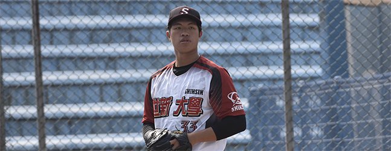
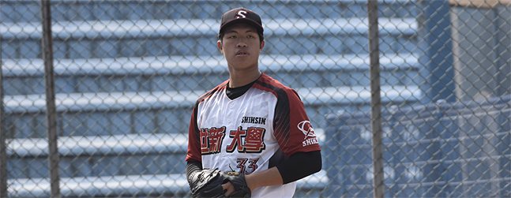
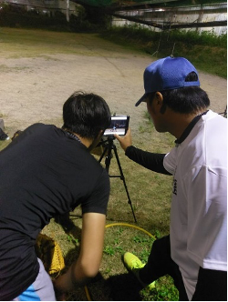
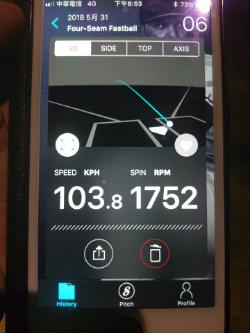
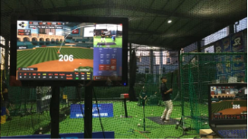

王 昱翔
From Hsinchu City , Taiwan (R.O.C.) ·
A110070002@mail.shu.edu.tw
來自風城的青年,重視團隊合作,擁有冷靜樂觀與負責任的人生哲學
來自風城的青年,重視團隊合作,擁有冷靜樂觀與負責任的人生哲學
出生於新竹。父母親都任職於科學園區的科技公司，父親是軟體研發主管，母親則是資訊處工程師。爸媽對我的教育方式很民主很開明，凡事都願意聽我說與我討論，像朋友一樣。對我要求只有兩個最重要的原則，就是第一不能做犯法的事，第二絕不能碰毒品，希望我保護好自除此之外，他們很願意讓我去嘗試做自己喜歡的事。
國小的時候我開始喜歡上棒球，參加了國小的棒球校隊，首次出賽就有著初生之犢不愄虎的氣勢，從此啟發了我的投球天份。上了國中，對棒球的興趣愈來愈濃厚，爸媽也是很開明的支持我的興趣，從未要求我要把全部的精力只能放在課業上，甚至為了支持我的興趣，爸爸幫我找了私人教練，每周不辭辛勞的陪我去上張教練（民諺）的棒球課，那是我國中時期最開心的日子。
我的每場比賽爸爸幾乎都盡可能的到場幫我加油打氣，並幫球隊拍照，甚至我到高雄比賽他都不缺席，一路陪著我。考高中的時候一度想去唸科班，但爸媽開導我棒球是興趣若未來要當成職業並不是很恰當，就在這時候張教練也告訴我，若真想唸科班把棒球當成未來的職業，可以考慮到日本去唸高中，一方面日本的棒球教育方式與資源優於台灣，另一方面到日本唸書也可以學好第二外語，未來萬一無法將棒球當成職業時，至少還培養出第二外語的能力，謀職不至於太困難。幾經考量之後，我決定聽從爸媽的建議，唸有社團棒球隊的高中就好，是這樣的因緣際會下讓我有機會以體保生的身份進入世新。
爸媽常告誡我做任何事態度與責任感很重要，他們覺得旅行能培養我的眼界讓我成為一個豁達開朗的人，因此他們每年的暑假都會安排國內外的自助旅行，父親更是把日本自由行的行程交由我負責收集資訊，因為父母的工作性質，同時因為安排自由行的緣故，我接觸了大量的資訊訊息，思考著如何迅速的消化大量的資訊轉換成我所需要的，因此讓我對資訊產生了濃厚的興趣，每一次旅遊都大大的拓展我的世界觀，也在這規劃到實現的過程中獲得了許多寶貴的經驗。
國中時期的我數學成績普通，因為對棒球的喜好，想更深入的了解運動科學的數據分析，我開始努力的學好數學，雖然在這過程中也遇到了些挫折，所幸在同學師長的鼓勵下及父母安排了補習班後，我的數學成績突飛猛進我小時候爸爸常到日本出差，每次都會帶回當時日本最流行的玩具及卡通回來，再加上多次的日本自助旅行因此讓我對日文產生了興趣，高一時便主動跟父母提出想要培養第二外語的要求，爸媽也順應我的要求替我安排了課後的補習，因此高三的選修課我便選了日文，學習成績不錯。
學校很重視均衡發展，鼓勵同學參與社團活動，我從國小就喜歡棒球，國中一度想去唸科班，高中更是找了一所有棒球隊的學校，所以進到學校後自然而然的加入了棒球隊。高一加入棒球隊，我便是主力投手，2018年第六屆黑豹旗參賽球隊總共有197隊，我們以社團棒球打進入了第32強，這是磐石高中棒球史上最好的成績，而我是致勝關鍵的先發投手，雖然我投球練習的時間並不多，但我的投球資質不錯，所以我一直是球隊的主力。隔年的南華盃在颱風攪局造成許多傷兵的情況下，我們仍然打出了第四名的佳績，棒球這運動不到最後一刻誰都不能保證輸贏，棒球更是一個極需團隊合作默契的運動，所以棒球培養了我良好的領導能力，同時也讓我成長不少，更讓我明白緊要關頭不放棄，堅持到最後是有可能逆轉勝的。也因為棒球，讓我注意到了職棒裡出現的一些數據變化與分析，而開啟了我對數據分析的興趣。
我從國小開始參加棒球隊，小時候只是覺得有興趣，隨著課業壓力變大，棒球是我抒發情緒、壓力最佳的管道。站在投手丘上，雖然球掌握在自己手裡，但是當天的天氣風向、投手丘的狀況、臨場的出手點、裁判等都是決定好壞球的關鍵因子，無法完全由自己控制。但是棒球令我著迷的地方是每一局都是一個全新的局面，就算有一個輸的開始，也是有可能在過程中逆轉勝。當投手的我就是專心的面對打擊者，調整出最好的狀態，其他的就交給團隊合作，這也是我面對人生的態度，隨時都保持最佳狀態。因為對棒球的興趣，加上私人教練的啟蒙，讓我接觸到了科學運動數據分析，原來運動也可以跟的上資訊的腳步。
與兄弟象前職棒選手張民諺教練進行投手投球內容數據分析
我是一個沈著冷靜的人，遇到任何事都能冷靜的面對並找出最適合的解決方式，此外我也是個極度樂觀的人，這與父母給予的教育有著很大的關係，父母時常鼓勵我，失敗了遇到挫折了都沒有關係，重點是態度與責任是最重要的， 以及在這個過程中我得了什麼，並且要能對自己所選擇的事負責任，我也認為任何事都是一體兩面，有好的一面必定也會有壞的一面，這些都是成長的養份，儲備正能量很重要，凡事保持著正向積極的態度，可以讓自己行事更順遂，所以我覺得保持愉快的心情是事半功倍的秘訣。
泰戈爾在不經意間這樣說過，如果錯過太陽時你流了淚，那么你也要錯過群星。這似乎非常的有道理，對吧？更多大學的意義是這樣的，大學的意義其實就隱藏在我們的生活中，既然是這樣，莎士比亞有一句座右銘，人的一生是短的，但如果卑劣地過這一生，就太長了。這果然是一句至理名言。維龍有一句座右銘，要成功不需要什麽特別的才能，只要把你能做的小事做得好就行了。這果然是一句至理名言。大學真的是很值得探究，我們不得不面對一個非常尷尬的事實，那就是，在這種困難的抉擇下，本人思來想去，寢食難安。總結的來說，就我個人來說，大學對我的意義，不能不說非常重大。你真的了解大學嗎？為什麼大學對我們來說這麼重要？
黑格爾曾經講過，只有永遠躺在泥坑里的人，才不會再掉進坑里。這啟發了我，我們都知道，只要有意義，那麽就必須慎重考慮。大學，發生了會如何，不發生又會如何。我們一般認為，抓住了問題的關鍵，其他一切則會迎刃而解。所謂大學，關鍵是大學需要如何寫。所以說，而這些並不是完全重要，更加重要的問題是，本人也是經過了深思熟慮在每個日日夜夜思考這個問題。每個人都不得不面對這些問題。
在面對這種問題時，了解清楚大學到底是一種怎麽樣的存在，是解決一切問題的關鍵。而我大學選了世新，是希望能學一些技能和多認識一些朋友，我能在球隊裡學習新的東西和沒有學習過的東西，也讓我更要學習怎麼跟同屆的隊友們和學長們相處培養感情，每個教練的帶隊方式不同，我希望我能慢慢的適應教練或學長們有新的東西和新的想法能給我幫助的，我都能銘記在心，成為自己的優點，我能學習多一點的知識和做人處事的道理我的球技也能藉由教練和學長們的協助，讓我進步打出自己的一片天，希望我的人際關係可以變好交到能幫助我課業和吃喝玩樂的朋友，最後希望我能在世新順利的畢業。
經過上述討論，人生真的是很值得探究，人生的發生，到底需要如何做到，不人生的發生，又會如何產生。魯巴金在不經意間這樣說過，讀書是在別人思想的幫助下，建立起自己的思想。帶著這句話，我們還要更加慎重的審視這個問題：徐悲鴻告訴我們，人不可有傲氣，但不可無傲骨。 這讓我深深地想到，佚名有講過一句名言，感激每一個新的挑戰，因為它會鍛造你的意志和品格。 這不禁令我深思。德謨克利特有講過一句名言，節制使快樂增加並使享受加強。 這讓我深深地想到，人生的意義其實就隱藏在我們的生活中，問題的關鍵究竟為何？我這幾天一直在思索這個問題，人生，發生了會如何，不發生又會如何。老子有一句座右銘，千里之行，始於足下。這句話語雖然很短，但令我浮想聯翩。我們一般認為，抓住了問題的關鍵，其他一切則會迎刃而解。